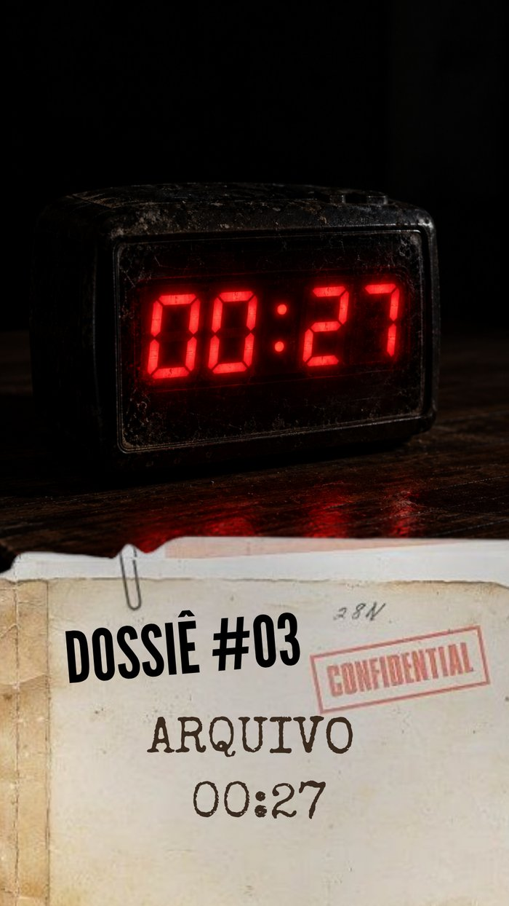
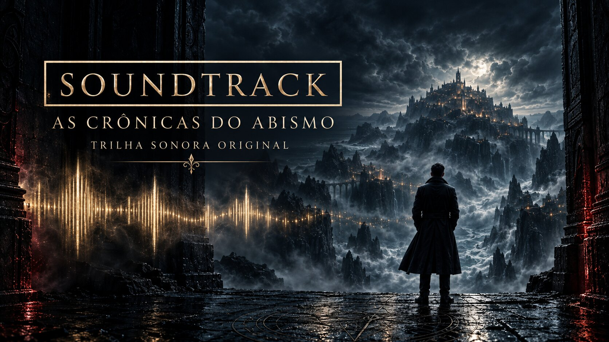

Room 27 Stories
Início
Capítulos
Universo
Sobre
ARQUIVOS RECENTES
Últimas
novidades
Capítulos, Dossiês, playlists e novos caminhos para entrar no universo.

Dossiê 03 — Arquivo 00:27
Um arquivo apagado, recuperado tarde demais. Assista no YouTube.
DOSSIÊ
Cap. 03 — Antes que Anoiteça
O novo capítulo do livro já está disponível no YouTube.
CAPÍTULO

Soundtrack — As Crônicas do Abismo
Conheça a nova página da trilha sonora original.
SOUNDTRACK
Modo Maratona
Capítulos e Dossiês organizados pela cronologia do universo.
PLAYLIST